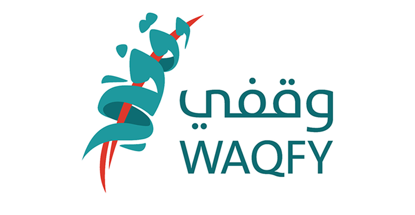

تفاصيل المشروع
مراحل تنفيذ المشروع العامة سوف تكون -بإذن الله- كالتالي: تهيئةُ النصِّ العربيِّ للترجمةِ. ترجمة الأحاديث المختارة وشروحها وفوائدها إلى اللغة الهدف. التدقيقُ اللُّغويُّ للترجمات. المراجعةُ الشرعيةُ واعتمادُ الترجمةِ. النشر الإلكتروني للترجمات على الموسوعة والإتاحة المجانية. وعدد الأحاديث المراد ترجمتها (1000) حديث مع شروحها وفوائدها، واللغات المراد الترجمة لها أكثر من (40) لغة وهي :: الإنجليزية- الإسبانية- الفرنسية- الروسية- الإندونيسية- البنغالية- الأردية- التركية- الفارسية- الفلبينية- الألمانية- الفيتنامية- السنهالية- السواحيلية- الهوسا- المليبارية- التلغو- التاميلية- الألبانية- الصربية- التايلندية- اليوربا- الإيطالية- البشتو- أذري- أزبكي- طاجيكي- كزخي- بورمي- آسامي- نيبالي- الهولندية- القرقيزية- الأمهرية- الأورومية- المدغشقرية- الفلاتية- الصومالية- اليوربا- الكنادية- الأوكرانية
: القائمون على المشاريع

: عبر
